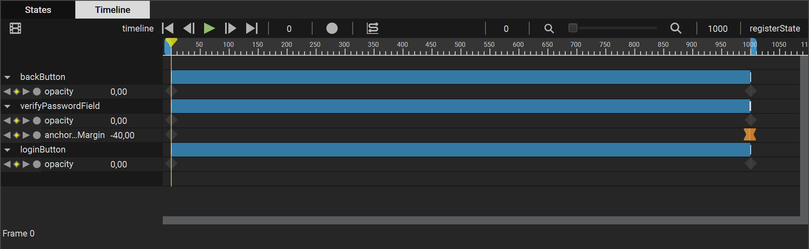
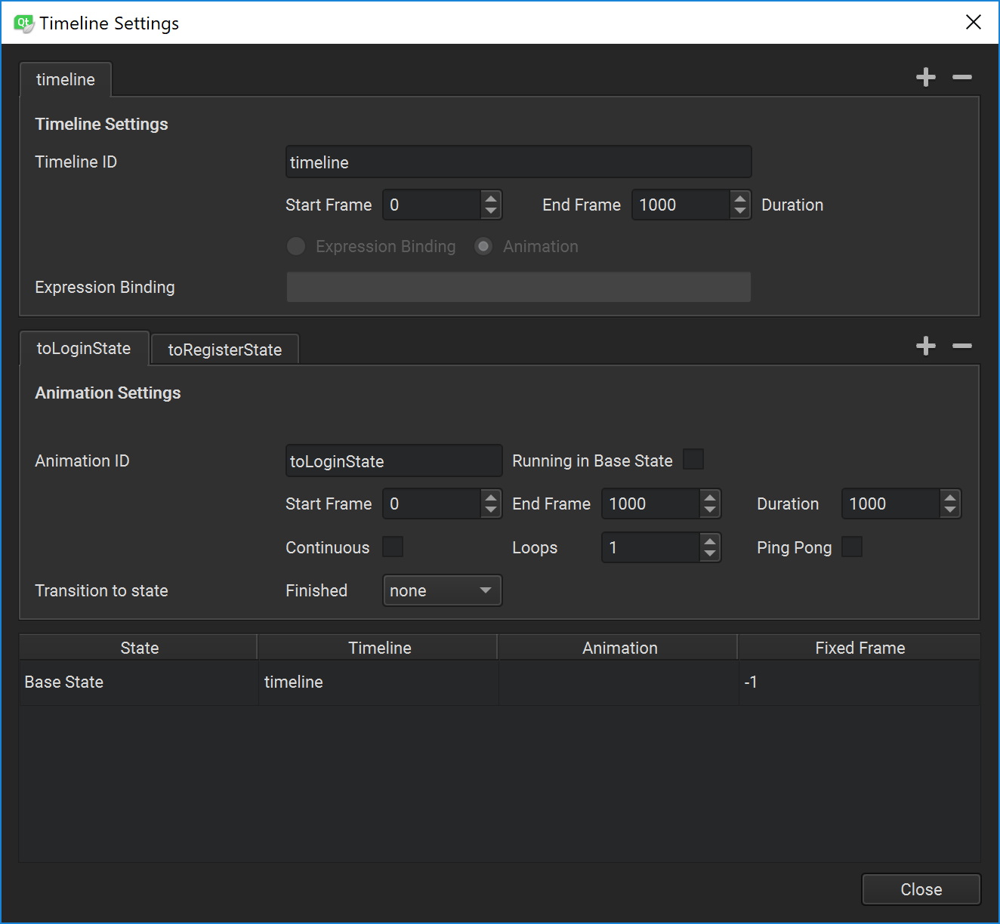

Qt Quick Timeline Overview
Timelines can be used to animate items and to define their behavior. Only one timeline can be active at a particular point in time.
Animating item properties enables their values to move through intermediate values instead of immediately changing to the target value. For example, to move an item in a scene, you can animate the properties that control the item's position, x and y, so that the item's position changes at keyframes on the way to the target position. Similarly, you could change the color and scale properties of the item at keyframes to make it appear to move closer or farther away.
Qt Design Studio and Qt Quick Designer contain a timeline editor for creating keyframe based animations.

Qt Quick allows you to declare various UI states in State objects. These states are comprised of property changes from a base state, and can be a useful way of organizing your UI logic. Transitions are objects you can associate with an item to define how its properties will animate when they change due to a state change. You can bind timeline animations to states in Qt Design Studio and Qt Quick Designer.
